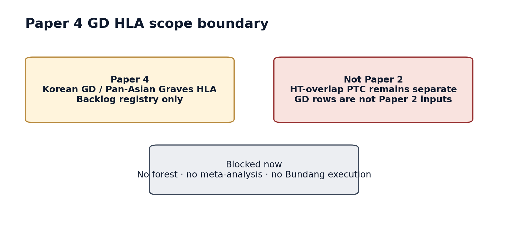
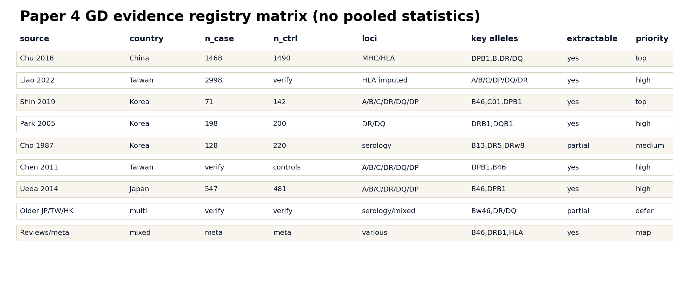
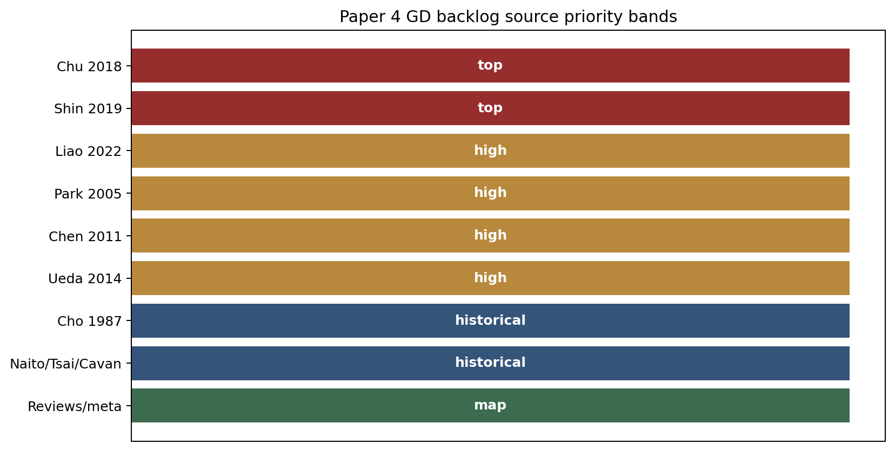
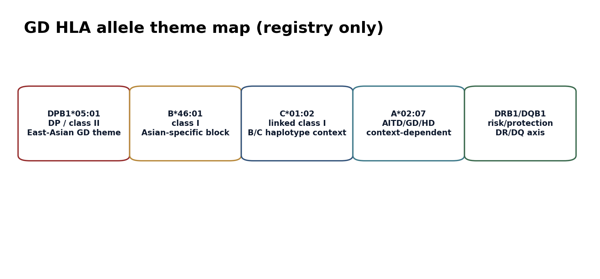
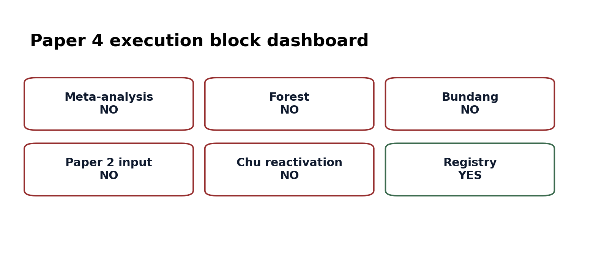
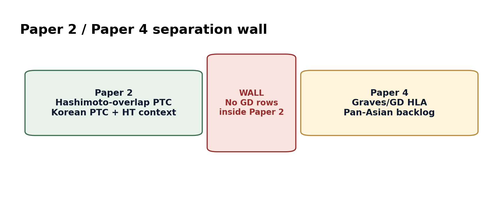
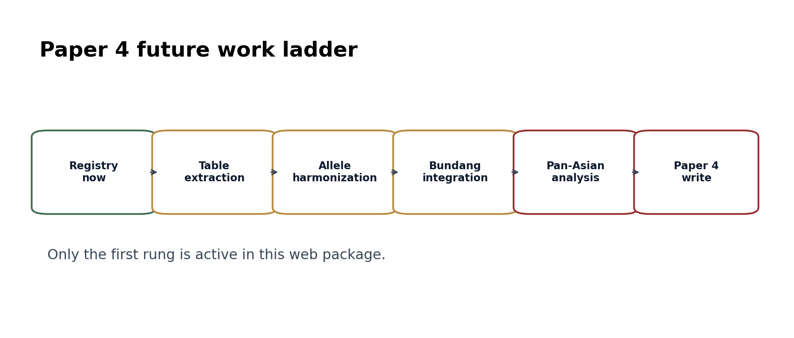

0. backlog 사고 흐름 — 왜 renumbered + 4-gate gating + registry-only인가
"왜 갑자기 Paper 3에서 Paper 4로 밀렸어? 왜 4개 gate가 모두 필요해? 왜 분석 안 하고 registry만? Paper 2 HT-overlap이랑 같은 allele 보이는데 왜 같이 분석 안 해?" — 이 4가지 결정의 근거. (출처: v19_paper4_GD_backlog · v18_paper2_HT_isolated · v17_arcasHLA_korean_k2)
0.1 왜 Paper 3 → Paper 4로 밀렸는가 (2026-05-04 renumber)
2026-05-03까지 v1: Paper 3 = Korean GD HLA. 2026-05-04 Yu 미팅에서 Paper 2가 "HT-isolated only"로 lock되면서 부수효과로 GD가 backlog 자리로.
| v1 (~2026-05-03) | v2 (Yu 2026-05-04 lock) | |
|---|---|---|
| Paper 3 | Korean GD HLA / Pan-Asian | ICI vulnerability dark thyroid cancer |
| Paper 4 | — | Korean GD HLA (backlog) |
| GD/Graves data | Paper 2 Pillar I forest | Paper 4 backlog only — Paper 2/3에서 invasion 금지 |
| Korean baseline (Paper 2) | Chu 2018 GD HLA | AFND South Korea pool — GD comparator는 Paper 4 reserve |
0.2 4-gate gating — 왜 4개 모두 필요한가
| Gate | Condition | Why required | Current |
|---|---|---|---|
| Gate 1 | Paper 1 bioRxiv 제출 (6/13 target) | Marathon attention 보호 — Paper 1 ship 전 displacement 차단 | ⏳ pending |
| Gate 2 | Paper 2 Pillar II/III closure | HT-PTC paper가 닫혀야 GD comparator 위치가 의미있음 | ⏳ pending |
| Gate 3 | Bundang SNUH cohort n>50 | Public source(15+)만으로 Pan-Asian forest 단단하지 않음 | ❌ outreach-stage |
| Gate 4 | Yu green light (literal) | 전략적 timing 결정권은 PI에게 | ❌ 미발화 |
0.3 registry-only state — Do / Don't
| Activity | Done? | Reason |
|---|---|---|
| Source indexing (15+ studies, Korea/China/Taiwan/Japan/HK) | YES | Source가 사라지기 전 색인 |
| Allele theme registry (DPB1*05:01, B*46:01, C*01:02 축) | YES | Field consensus → 향후 forest backbone |
| arcasHLA Korean K2 imputation n=260 | YES (2026-04-29 Azure $4.80) | RNA-seq imputation 가능 검증; DPB1*05:01 56% replicate Kim 2014 |
| Pooled meta-analysis | NO | Gate 통과 전 forest 빌드 시 marathon displacement |
| Pan-Asian forest plot | NO | Bundang n>50 후에만 의미 |
| cookHLA SNP-based imputation | NO | Bundang germline access 필요 |
| Paper 2/3에 GD allele invasion | NO | Disease firewall (0.4) |
0.4 Disease firewall — shared allele 이름 ≠ shared disease
Paper 4의 가장 중요한 정체성. 같은 HLA allele이 GD와 HT 둘 다에서 association 있어 보여도, mechanism이 다르므로 row 단위 분리.
| Allele | Graves' (Paper 4) | Hashimoto / HT-overlap (Paper 2) | Firewall |
|---|---|---|---|
| HLA-DPB1*05:01 | East-Asian GD strong (Kim 2014, K2 56%) | HT/HT-overlap PTC mechanism은 different (HLA-DRB1 dominant) | 같은 allele 이름이어도 disease boundary 명시 |
| HLA-B*46:01 | East-Asian GD susceptibility | HT 직접 association 약함 | GD-only forest |
| HLA-C*01:02 | East-Asian GD axis | — | GD-only |
| HLA-DRB1*04:05 / *03:01 | 변동 | Paper 2 territory main | Paper 2 territory |
0.5 사고 흐름 한 페이지 요약
1. 한 줄 결론
2. 비전공자 배경
Graves' disease (GD) 와 Hashimoto thyroiditis (HT) 는 둘 다 자가면역 갑상선 질환이지만 임상도 메커니즘도 다르다. GD 는 TSH receptor 자극성 자가항체 + 갑상선 기능항진. HT 는 파괴성 갑상선염 + lymphocytic infiltration. HLA 배경이 부분적으로 겹치는 alleles (DPB1*05:01, B*46:01 등) 가 있지만, 한 disease 의 rows 를 다른 disease 의 분석에 그대로 넣으면 결과가 오염된다.
Paper 2 는 Hashimoto-overlap PTC (갑상선암 + Hashimoto 동반) 가 main subject 이고, Paper 4 는 Korean / Pan-Asian Graves disease HLA 가 main subject. 이름이 같아 보이는 allele 이라도 disease 가 다르면 분석 입력이 될 수 없다 는 것이 이 페이지의 firewall.
2.1 용어 정리
| Term | 풀어쓴 설명 | Paper 4 에서의 역할 |
|---|---|---|
| GD / Graves' disease | TSH receptor 자극성 자가항체와 갑상선 기능항진이 중심인 autoimmune thyroid disease. | Paper 4 의 disease target. |
| HT / Hashimoto thyroiditis | 파괴성 갑상선염과 lymphocytic thyroiditis 가 중심인 autoimmune thyroid context. | Paper 2 context. Paper 4 와 섞지 않는다. |
| Pan-Asian registry | Korea, China, Taiwan, Japan, Hong Kong source 를 한 표로 모으는 planning layer. | 나중에 extraction/meta-analysis 를 준비하는 backlog. |
| Fine mapping | allele 뿐 아니라 amino-acid position 까지 disease association 을 좁히는 분석. | Chu 2018 같은 source 의 강점이지만 여기서는 read-only registry. |
| Bundang integration | 향후 Korean GD cohort 결합 가능성. | 현재는 금지. n / gate / approval 모두 필요. |
| 4-digit HLA | HLA allele 을 4 자리까지 (예: DRB1*15:01) typing 한 결과. | serologic typing (예: DR2) 과 합치면 안 되는 보다 정밀한 layer. |
3. 전체 논리 흐름
Paper 4 는 지금 "더 분석" 하는 단계가 아니라 "나중에 분석할 수 있게 source 를 망치지 않고 분리해 놓는" 단계다. Paper 2 에서 GD evidence 를 섞으면 Hashimoto-overlap PTC story 가 흐려지고, Paper 4 에서 해야 할 Pan-Asian GD HLA story 도 같이 망가진다.
3.1 분석 사고 스토리
3.2 Evidence ladder
| Level | Evidence | Reader should conclude | Do not conclude |
|---|---|---|---|
| 1 | Chu 2018 / Liao 2022 / Shin 2019 / Park 2005 indexed | Core Paper 4 source set exists. | It has been harmonized. |
| 2 | Country/ancestry map | Pan-Asian scope is plausible. | Countries can be pooled without modeling. |
| 3 | Allele theme map | Candidate allele themes are visible. | Allele-level meta-analysis is done. |
| 4 | Future extraction schema | Execution can be planned cleanly. | Counts have been extracted source by source. |
| 5 | Paper 2 overlap | Shared allele names can be noted as boundary context. | GD rows validate Paper 2. |
4. Why this is not Paper 2
5. Source registry
| Source | Country / ancestry | n_GD | n_control | HLA loci | Key alleles / signals | Status |
|---|---|---|---|---|---|---|
| Chu 2018 | China / Han Chinese | 1,468 | 1,490 | MHC HLA fine mapping | DPB1*05:01, B*46:01, DP/DR/B amino-acid positions | backlog top |
| Liao 2022 | Taiwanese | 2,998 | control design to extract | HLA imputation, class I/II | A*02:07, B*46:01, C*01:02, DP/DQ/DR variants | backlog high |
| Shin 2019 | Korean children | 71 | 142 | A/B/C/DRB1/DQB1/DPB1 | B*46:01, C*01:02, DPB1*05:01, DPB1 amino-acid signals | Korean bridge |
| Park 2005 | Korean | 198 | 200 | DRB1/DQB1 | DRB1*08:03, DRB1*16:02, DQB1 | backlog high |
| Cho 1987 | Korean | 128 | 220 | serologic A/B/C/DR | B13, DR5, DRw8 | historical |
| Chen 2011 | Taiwan / Han Chinese | table extraction needed | population controls | A/B/C/DRB1/DQB1/DPB1 | DPB1*05:01, B*46:01, DR/DQ alleles | backlog high |
| Ueda 2014 | Japanese | 547 | 481 | A/B/C/DRB1/DQB1/DPB1 | B*46:01, DPB1*05:01, DR/DQ alleles | backlog high |
| Older Japan/Taiwan/HK | Japan, Taiwan, Hong Kong | varies | varies | serology / mixed HLA | Bw46, DR/DQ signals | source discovery |
| Reviews/meta | Asian and mixed | meta/review | meta/review | HLA-B, DRB1, broad HLA | B*46, DRB1, GD/GO review tables | citation map |
6. Key allele themes
| Theme | Paper 4 meaning | Current limit |
|---|---|---|
| DPB1*05:01 | Repeated East-Asian GD signal in Chinese/Taiwanese/Japanese/Korean sources. | No pooled estimate here. |
| B*46:01 / C*01:02 / A*02:07 | Class I East-Asian HLA block appears across several GD/AITD sources. | No Paper 2 reuse as GD comparator. |
| DRB1 / DQB1 | Older Korean GD and newer meta-analysis sources focus on DR/DQ risk/protection. | Resolution varies by study. |
| Amino-acid fine mapping | Chu 2018 and Shin 2019 report amino-acid level signals. | Registry only; no reanalysis. |
7. What can be done later
8. Figures (P4-F1 ~ F10)
Click any figure to enlarge. These graphics are registry/status diagrams only, not pooled-statistic outputs.

P4-F1. What this means: Paper 4 is the GD/Graves backlog. What it does not mean: the backlog is active execution.

P4-F2. What this means: sources span Korea, China, Taiwan, Japan, Hong Kong, and reviews. What it does not mean: sources were pooled.

P4-F3. What this means: extractability and priority are mapped. What it does not mean: any summary statistic was computed.

P4-F4. What this means: Paper 4 requires gates before analysis. What it does not mean: Bundang or meta-analysis work has started.

P4-F5. What this means: source priority is staged for future extraction. What it does not mean: priority is an effect size.

P4-F6. What this means: common allele themes are mapped. What it does not mean: alleles were pooled across countries.

P4-F7. What this means: only registry work is active. What it does not mean: meta-analysis is allowed now.

P4-F8. What this means: future extraction columns are defined. What it does not mean: extraction or harmonization has been completed.

P4-F9. What this means: the disease boundary is explicit. What it does not mean: shared alleles make GD a Paper 2 comparator.

P4-F10. What this means: only the registry rung is active now. What it does not mean: later rungs can start without gates.
9. Expanded registry planning tables
9.1 Future extraction schema
| Column | Why it matters | Current page status |
|---|---|---|
| source_id | Prevents Chu/Liao/Shin/Park rows from being mixed silently. | planned |
| disease_label | GD, GO, HD, AITD, control must stay separate. | planned |
| ancestry | Korean, Han Chinese, Taiwanese, Japanese, Hong Kong Chinese are not interchangeable. | planned |
| frequency_type | Allele, carrier, genotype, and serology frequencies cannot be merged silently. | planned |
| effect_stat | OR/p values stay source-level until Paper 4 gates clear. | not pooled |
9.2 Blocked-vs-future table
| Task | Now | Later Paper 4 |
|---|---|---|
| GD source registry | allowed and complete enough for review | expand with full-text extraction |
| Allele harmonization | rules only | execute after gates |
| Forest/meta-analysis | blocked | possible after Paper 4 approval |
| Bundang integration | blocked | possible if n>50 and Yu approves |
| Paper 2 reuse | blocked | still no; Paper 2 remains HT/PTC |
10. Safe wording vs unsafe wording
| Topic | Safe wording | Unsafe wording | Reason |
|---|---|---|---|
| Registry | Paper 4 has a curated source registry for future GD HLA extraction. | Paper 4 has completed meta-analysis. | No pooled statistics were run. |
| Chu 2018 | Chu 2018 is a top-priority Han Chinese GD fine-mapping source. | Chu 2018 is a Paper 2 comparator. | GD rows are blocked from Paper 2. |
| Pan-Asian | Asian source coverage is broad enough to plan harmonization. | Korean, Han Chinese, Taiwanese, Japanese sources are interchangeable. | Ancestry and typing differences require modeling. |
| Bundang | Bundang integration is a future gate-dependent step. | Bundang is now active. | User boundary keeps Bundang GD work blocked. |
11. Claim boundary table
| Claim | Status |
|---|---|
| GD source registry | YES |
| Meta-analysis | NO |
| Forest plot | NO |
| Bundang integration | NO |
| Paper 2 input | NO |
| Future Paper 4 | YES, after gates |
Next action: keep registry frozen, or return to Paper 1 Hook.